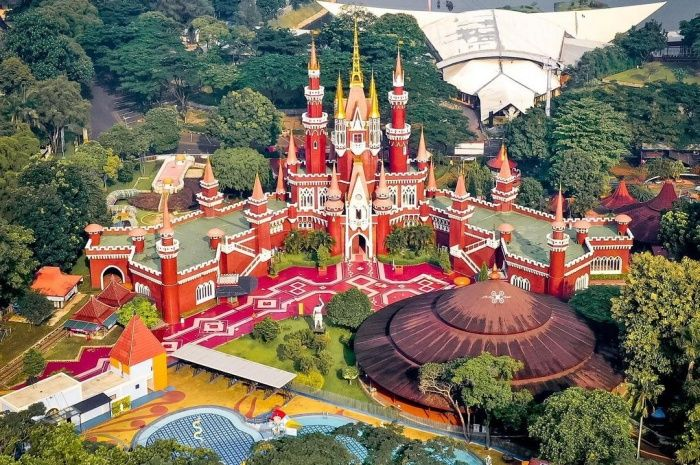

TMII
TMII Taman Mini Indonesia Indah adalah kompleks taman yang merepresentasikan berbagai suku dan budaya di Indonesia. Setiap paviliun mewakili provinsi dan menampilkan budaya, arsitektur, dan seni tradisional dari daerah tersebut.
TMII Taman Mini Indonesia Indah adalah kompleks taman yang merepresentasikan berbagai suku dan budaya di Indonesia. Setiap paviliun mewakili provinsi dan menampilkan budaya, arsitektur, dan seni tradisional dari daerah tersebut.